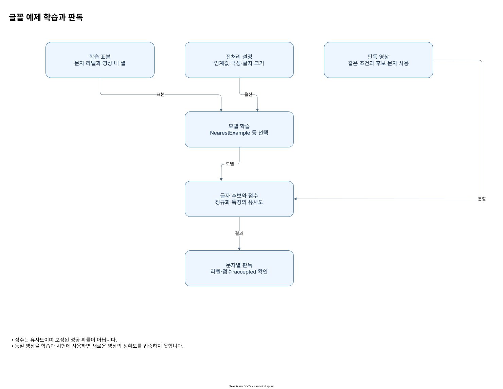

별도 글꼴 템플릿 경로
FontOcrModel은 라벨과 잘라낸 글자 셀을 학습하는 별도 방법입니다. FontOcrOptions의 threshold는 u8, light_text는 극성, closing_radius는 0–8, 최소 너비·높이는 1 이상, 최대값은 각 최소값 이상입니다. split_touching은 넓은 연결 성분을 분할합니다. allowed_chars는 비어 있지 않아야 하고 position_chars는 비어 있거나 위치별 비어 있지 않은 문자 집합입니다. min_glyph_score 및 min_string_score는 유한한 0–1입니다. NearestExample 또는 ClassMean으로 학습하며 결과 점수는 보정된 확률이 아니라 유사도입니다. 각 글자의 label, cell, score, accepted와 전체 accepted를 확인합니다.

판독 기준
- 점수는 유사도이며 보정된 성공 확률이 아닙니다.
- 동일 영상을 학습과 시험에 사용하면 새로운 영상의 정확도를 입증하지 못합니다.
FontOcrModel은 라벨이 붙은 글자 영상과 셀을 이용하는 템플릿 방식입니다. 이미지의 밝기 임계값과 light_text 극성으로 전경을 정하고 선택된 셀의 특징을 학습합니다. NearestExample은 개별 예제와 비교하고 ClassMean은 같은 라벨의 특징 평균을 사용합니다. 반환 score는 템플릿 유사도이며 확률로 보정된 값이라는 뜻이 아닙니다.
옵션에는 폭과 높이의 최소·최대, 선택적인 문자 분할, 허용 문자와 위치별 문자 집합, 글자 및 문자열 최소 점수가 포함됩니다. closing_radius는 0부터 8까지이며 0이면 닫기를 사용하지 않습니다. 크기 최소값은 양수이고 최대값은 최소값 이상이어야 합니다. 글자별 label, cell, score, accepted와 전체 accepted를 확인하고, 다른 글꼴이나 조명에서의 성능은 학습에 사용하지 않은 이미지로 평가합니다.
분할과 수용의 구분
템플릿 글꼴 경로는 먼저 임계값과 극성으로 전경을 만들고, 행과 열의 투영으로 줄과 글자 셀을 나눕니다. 폭·높이 최소와 최대 설정은 유효한 셀을 선택하는 조건입니다. closing_radius=0이면 닫기를 수행하지 않으며, 1–8의 반경은 작은 틈을 잇는 처리에 쓰입니다. split_touching을 사용하면 지나치게 넓은 연결 성분을 분할하려고 시도합니다.
학습 시 라벨이 A인 셀을 전달했다고 해서 모든 글자가 A로 허용되는 것은 아닙니다. allowed_chars와 선택적인 위치별 집합, min_glyph_score와 min_string_score가 후속 수용을 제한합니다. 한 글자의 점수가 기준 미만인 상황과 전체 문자열의 accepted를 각각 확인하세요. 점수는 템플릿 유사도라서 0.9를 확률 90%로 해석할 수 없습니다. 실물 성능은 학습하지 않은 글자 영상에서 별도로 측정합니다.
| 항목 | 입력·설정 | 판독 |
|---|---|---|
| 전경 | threshold·극성 | 픽셀 분리 |
| 셀 | 폭·높이 범위 | 문자 분할 |
| 학습 | 개별 예 또는 라벨 평균 | 템플릿 구성 |
| 수용 | 문자·문자열 점수 | 각각 확인 |